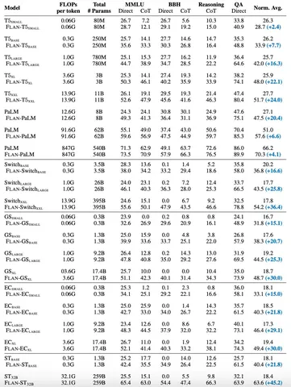

Техника Mixture of Experts (MoE) предполагает использование в сети нескольких специализированных блоков — экспертов — для решения одной задачи. Модели на архитектуре MoE сильно выигрывают от грамотного файнтюнинга. Об этом и говорится в статье, которую мы сегодня разберём.
Преимущества инстракшн-тюнинга
Секрет, как утверждают авторы, в предварительном инстракшн-тюнинге — после претрейна и до файнтюнинга. Проверяют эту гипотезу на нескольких сетапах. Первый — Switch Transformer, у которого каждый слой MoE и только топ-1 гейтинг. Далее — GShard с топ-2 гейтингом, expert-choice, дающий возможность экспертам выбирать токены и ST-MoE.
На графике можно увидеть результаты файнтьюнинга моделей с инстракшн-тюнингом (приставка Flan) и без него, сразу после претрейна. В первом случае МоE выбивается вперёд, а вот во втором её показатели хуже, чем у Т5. Это происходит потому, что при обычном файнтюнинге МоЕ-моделей они теряют преимущество, ведь «эксперты» начинают сходиться во мнениях.
Как устроен инстракшн-тюнинг
Авторы использовали задачи из FLAN-датасета и применяли auxillary loss. Это нужно, чтобы все токены не отправлялись одному «эксперту». Также применяли дропаут (0,05) и экспертный дропаут (0,2). Коэффициент скорости обучения — на уровне 1e −4.
Результаты
Авторы статьи утверждают, что их FLAN-MoE, требующий 32 миллиарда операций при форварде (32.1 GFLOPs/token), показывает себя лучше, чем FLAN-PALM, у которого в 3 раза больше количество операций 91.6 GFLOPs/token. В итоге после инстракшн-тюнинга показатели модели выросли в три с лишним раза. Выглядит слегка подозрительно, но впечатляет. Более того, при росте модели сохраняется тенденция к росту показателей после инстракшн-тюнинга. Но авторы подчёркивают, что количество данных важнее, чем число «экспертов».
Разбор подготовил
Душный NLP
